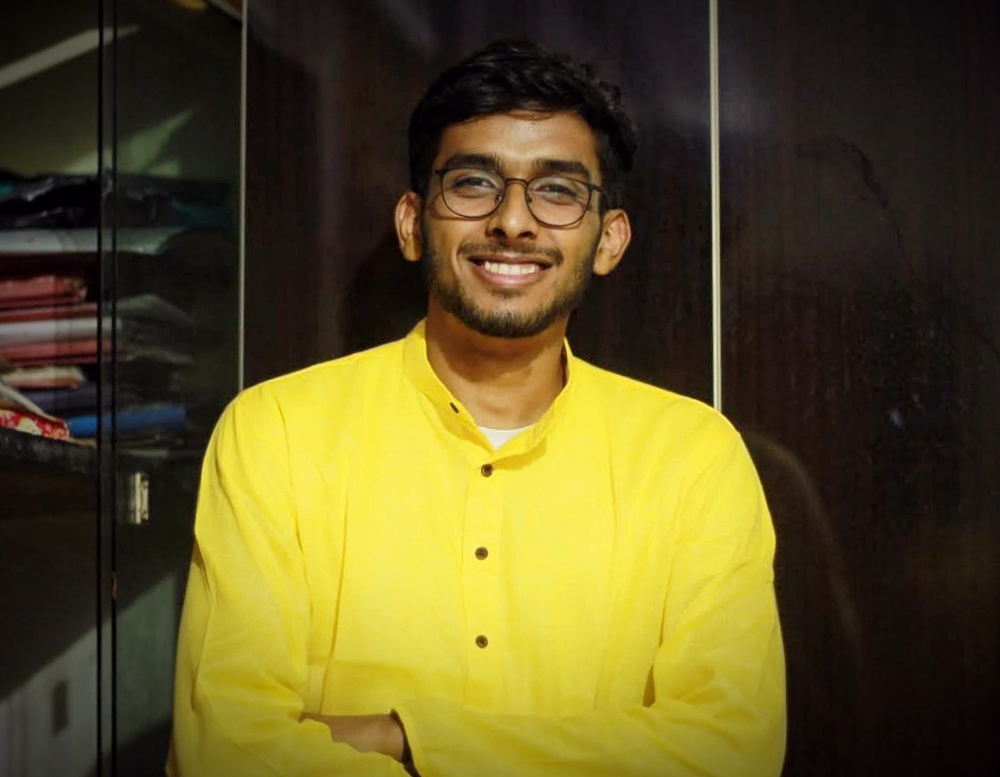

Pranay Dumbhare Resume

Objective
To seek an opportunity to work in your esteemed organization and to
contribute towards its growth while I improve my skill set and gain
industry knowledge.
Education
- Did my 10th from JNV Gondia and got a CGPA of 10.
- Did my 12th from JNV Gondia and got 90.6 percent.
- Did my B.Tech from VNIT ECE and got a CGPA of 8.61.
Work Experience
-
Summer Internship at Oracle
The role involved indexing multiple databases using Apache Lucene and
searching in these index files the query which the user has entered
through the web application page. Also projects including querying
search using GraphQL and exploring basic functionalities of Spring
Boot and Spring were performed.
-
Machine Learning Intern at Adysys
The role involved developing a ML model for blood cell segmentation
and counting.
Skills
-
Programming Languages: C/C++, Python3, JAVA, MATLAB
- Data Structures and Algorithms
- Database Management: SQL
-
Software Packages: Matplotlib, Numpy, Pandas, Keras,
TensorFlow
-
Web Application Packages: SpringBoot , GraphQL , Apache
Lucene
-
Additional Tools: Github, Arduino, Simulink, NI
Multisim, LaTex
- Deep Learning and Machine Learning
Position of Responsibilities
- Training and Placement Coordinator for ECE Department (2020-2023)
- Campus Manager for Geeks for Geeks (2020-2023)
- Class Supervisor in class 10th and 12th. (2016 and 2018)
Achievements and Honours
- Cracked SSB in National Defence Academy Examination-2019
-
Participated In SWADES-20 and was ranked among the top 3 teams for the
ideas and changes that should be implemented for rural India welfare.
Other Information
Contact Me
Extra Curricular Activities